| Pause/Play |  |
| Volume Up |  |
| Volume Down | |
| Mute/Unmute |  |
| Small Video |  |
| Large Video |  |
| Play Faster |  |
| Play Slower | |
| Jump Forward |  |
| Jump Backward |  |
| Pause/Play | |
| Volume Up | |
| Volume Down | |
| Mute/Unmute | |
| Small Video | |
| Large Video | |
| Play Faster | |
| Play Slower | |
| Jump Forward |  |
| Jump Backward |  |